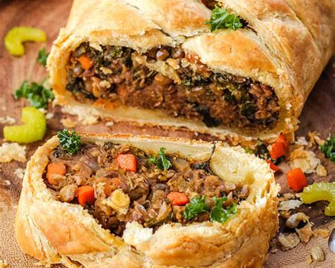

Cheesy Hamburger Rice Casserole

Ingredients
pound ground beef
ounce cream of mushroom soup
ounce ced tomatoes with juice
½ cup long grain white rice
¾ cup shredded mozzarella cheese
and pepper to taste
How To Prepare
the ground beef into a skillet over medium-high heat. Cook and stir until evenly browned. Drain off grease, and stir in the cream of mushroom soup, tomatoes, and uncooked rice. Cover, and simmer over low heat, stirring occasionally, until rice is cooked, about 15 minutes.
the oven's broiler. When the rice is done cooking, transfer the contents of the skillet to a casserole dish. Cover with a layer of cheese.
until the cheese is melted and toasty. Season with salt and pepper to taste, and enjoy!